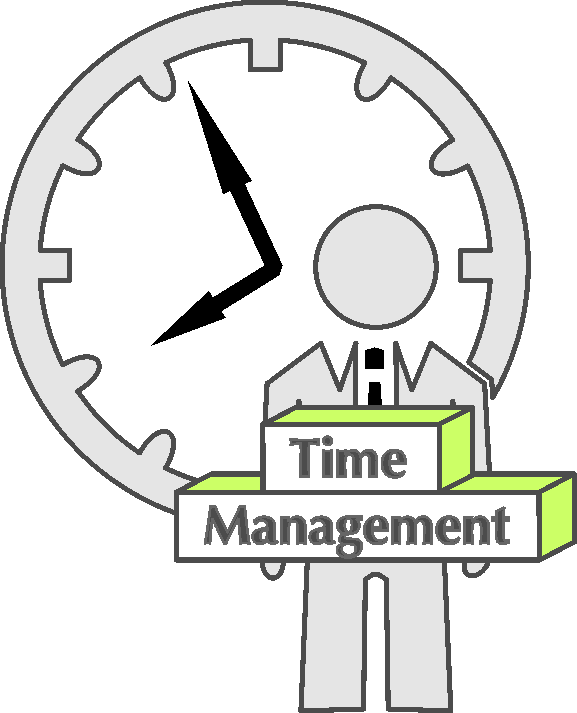
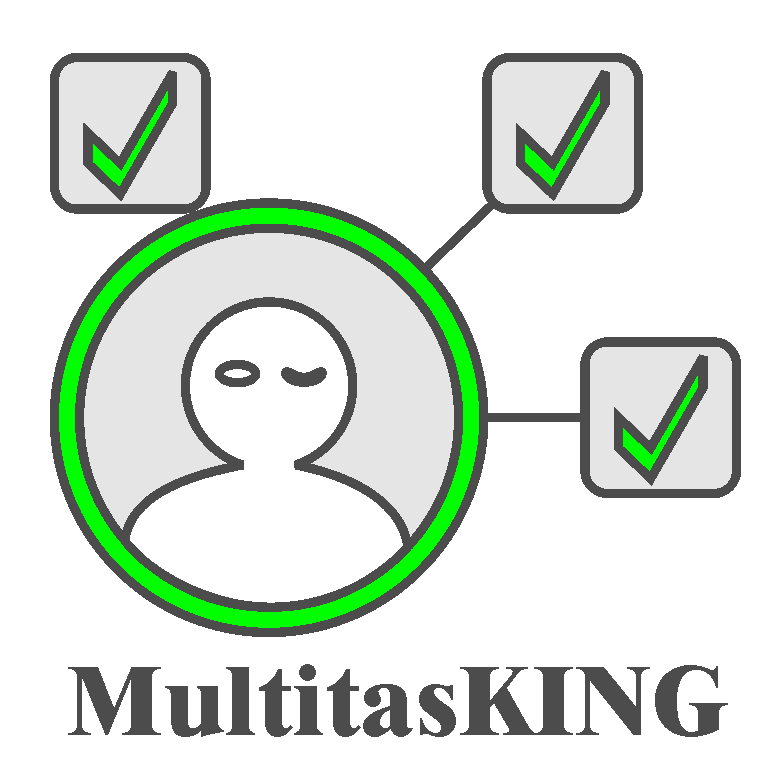
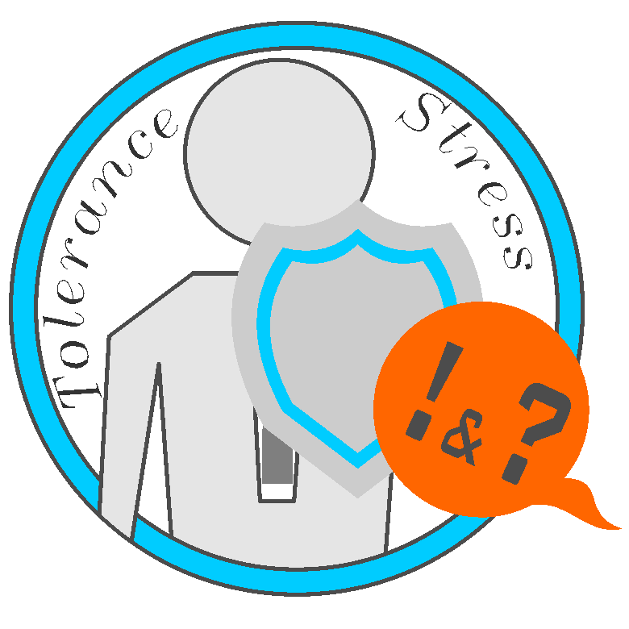
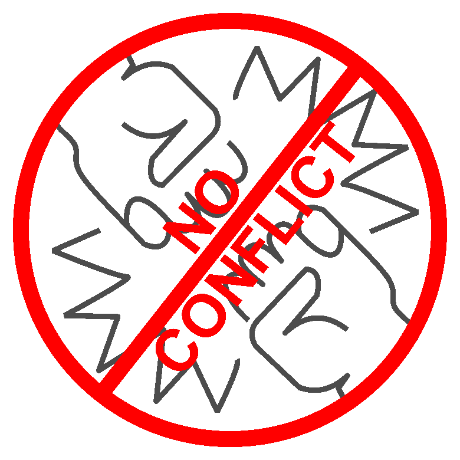
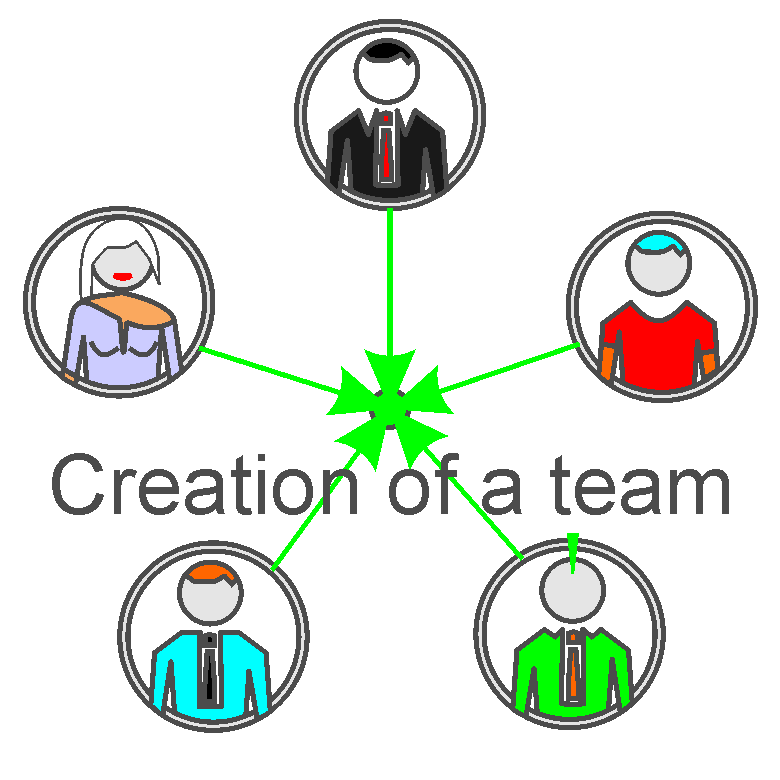
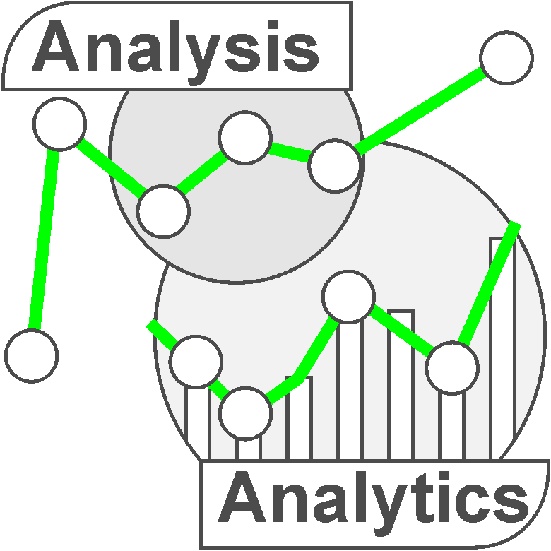
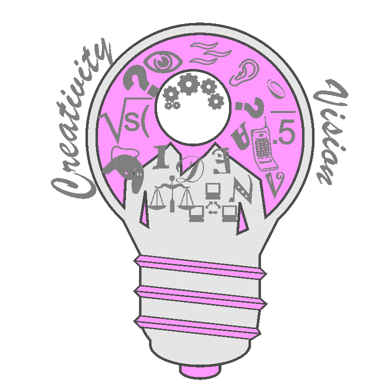

-
Story.
Education.
Profession.
Hobby.
Self-education.
Computer programs.
Programming.
Front-end.
Target.
Now.
Education.Born in Ukraine in the city of Kharkov. He graduated from high school in the same city. He studied at the National Aerospace University (KhAI) with a degree in: "Radio engineering devices, systems and complexes." In 2002 he defended his diploma for a Bachelor's degree, and in 2003 for a Specialist's degree (Theme of work: "Development of voice signal compression algorithms in DECT and GSM900/1800 mobile communication systems"). In 2006 he graduated from the courses of managers.
Profession.For the last twenty years, my main activity has been everything related to engineering. I went all the way from an employee to the chief engineer of the enterprise. Worked in companies and as a freelancer. Learned to make quick decisions without the right to make mistakes. After 2015, as a freelance engineering communications consultant, dealt with issues related to the smooth operation of all engineering systems of the enterprise, as well as communication with contractors (task setting, search and selection, control of execution and acceptance of work performed). As the chief engineer of the enterprise, my duties included the functions of planning and organizing the work of the technical department, as well as the selection, motivation and control of the work of employees. Using in their work software products and knowledge of Time Management in combination with the Kanban methodology, all processes were automated as much as possible.
Hobby.I like to study and apply new technologies in practice in my work. In addition, I like to create something new, something that is not there yet. Therefore, all my hobbies, one way or another, arose from ordinary curiosity, which requires constant learning.
Self-education.This is where books play an important role in my life. When there is no time to read, audiobooks come to the rescue. Access to video courses and trainings on the Internet allows you to build knowledge on your own. For example, when learning a foreign language.
Computer programs.Since 2002, in my professional activity and hobby, I have been using various tools. To create a design for printing and packaging - CorelDraw и Photoshop; for industrial design and prototyping - Blender, ArtCam; sometimes Pepakura; for writing instructions, books and articles - text editors.
Programming.Several times in my life I faced the need to be able to program. Computer languages with which I had to work (or learn) in different periods of my life: Basic, Fortran, Pascal, FunctionBlockDiagram, Python.
Front-end.Because the development of the visible part of the site combines both programming and design. How to do it with a HTML, CSS and SCSS/SASS - now i know. Front-end technology study started in October 2022. My works created in this direction are presented in the portfolio. In now – study JawaScript, jQuery.
My goal.My goal – so that the creation of websites was not just a hobby, but turned into a profession. I have already managed to make a full-fledged professional career in an industry that requires a high level of responsibility, composure and knowledge. Over the next ten years, I want to take a new path in creating websites and online applications.
Now.There is a need for practice on real projects. That's why I'm interested in employment in company, in which there is an opportunity to grow from an intern to a mid-level specialist and above. Remotely a job title. Now, all my free time is spent studying JawaScript and practice HTML и CSS. My technique self-education: 1. Example video or short introductory lecture; 2. Video lesson analysis and identification of unclear points; 3. Modern textbook -> lecture notes; 4. Practice, practice and again practice; 5. Repetition of the main points according to the abstract, after 7, 20, 100 days.
-
Hard Skills.
Coding
Development
Other
CodingI really like it.
After four months of intensive training, I moved on to practice. For training, I used video courses on YouTube channels and modern books.
Now the practice takes up to eight hours a day. I implement my ideas and analyze in detail the examples published in codepen, YouTube and the top 20 best sites in the world. Every day I learn something new and develop as a specialist.
In my work I use VScode with various plugins, SCSS.
I can understand jQuery and JavaScript code. Right now (March 2023) I am intensively studying JavaScript in order to learn how to create a complex script on my own.
DevelopmentI really like it.
With the help of programs, you can transfer ideas from imagination to the virtual world. Show them to other people. All you need is knowledge and a computer.
Twenty years ago I was introduced to Photoshop and Corel Draw. In my daily professional activities I used Corel Draw. Now I use it to create svg files. Photoshop was rarely used.
In 2018, I needed to make a 3D visualization of an object. That's how I met Blender. It allows me to create both 3D illustrations and spectacular 3D animations.
I learned to work very quickly with the Figma and Avokod programs, because they are similar to the programs I already know.
OtherBasic education and extensive experience in engineering will help me quickly learn the frontend. The principles of OOP are very similar to the principles of systems that I studied earlier. You can consider a site (application) as a complex consisting of systems (pages), and systems consist of devices (blocks). The Perfect Code book by Steve McConnell helped clear things up.
I have little practice in spoken English, but I can read and write in this language.
Often I had to write instructions for equipment, technical documentation and marketing articles. -
Soft Skills.
TimeManagement
MultitasKING
NoConflict
StressTolerance
Creation_of_a_team
TeamManagement
AnalysisAnalytics
CreativityVision
TimeManagement Time is not a renewable resource. It is important to use it correctly. There are only 24 hours in a day, but that's 1440 minutes. This is enough for all sectors of life, if you apply simple rules: 1. Planning and a list of tasks. 2. Importance and priority of tasks. 3. Use the Pareto 80/20 principle.
MultitasKING Principles: 1. Depending on the priority of tasks - one main, and the second background. 2. If there are several important tasks, then regular switching between tasks.
StressTolerance This is an acquired life experience. The science of conflictology explains the rules of behavior that help to detect the beginning conflict and prevent an uncontrolled emotional outburst.
NoConflict This is experience gained over many years of work 24/7. The way the world works is that there is a place for problems in it. If he treats problems as tasks, then it remains just to calmly solve the problem.
Creation_of_a_team I am regularly entrusted with the honor of recruiting a team of specialists to solve a given problem. At the same time, I take into account professional and personal characteristics so that the task is completed on time and at the same time joint work brings pleasure.
TeamManagementTo manage is not to prevent good people from working. But it is important to see the "weak link" in the chain of employees in time ... and replace or "repair" it. The result is the only measure for both employee evaluation and teamwork.
AnalysisAnalytics A good technical education and an analytical mindset allow me to work with a large amount of information. As a result of such work, a brief conclusion and a roadmap are obtained. Find the chain of events that led to the current situation. Predict the consequences of a possible algorithm of actions and compare with the desired goal.
CreativityVision I often get ideas. They do not always lead to a patent, but are recorded in a notebook. I can explain and depict what I see in my imagination. This helps to find non-standard solutions to complex problems and create new ones.